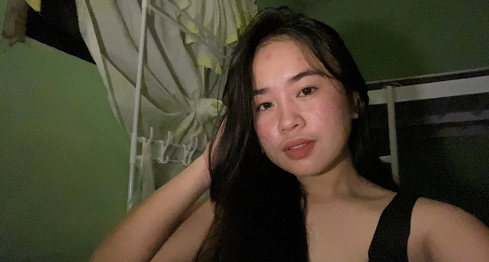

ABOUT ME
Allyzza May Bala
I am a student of St. Rose College Educational Foundation Inc. taking Bachelor of Science in Computer Science (BSCS). I am passionate about technology, programming, and learning how computers can be used to solve real-world problems. Through Computer Science, I am developing skills in coding, web development, database management, and problem-solving. This portfolio showcases my skills, projects, experiences, and growth as a Computer Science student.
About me
Get to know
me better.
Debugging the present, coding the future.
I'm Allyzza May Bala, you can call me "Ally", "Zaza", "Za". 21 years of age and currently living at Pura, Tarlac. I'm a 4th year student of Computer Studies at St. Rose College Educational Foundation Inc. Why I choose Comscie? because crying in front of laptop hits different.
Hobbies
- Watching Documentaries
- Cooking
- Listening to music
- Traveling and exploring new places
02 / Expertise
Tools change. Curiosity stays.
Frontend
development
HTML, CSS, responsive systems, and interfaces that move with purpose.
Interaction
design
Photoshop, Sketchup, and Canva that edits make every click feel considered.
Other
skills
Fast learner, Problem-solving, Data Encoding.
03 / Academic work
Made with
intention.
A few projects that showcase my academic journey.
Personal Website
This website is created to introduce who I am and where you can get to know my hobies, my favorite fruits and places that i'd like to visit in the philippines.
Food Website
This website is about famous filipino foods and a filipino food vlogger.
04 / Contact
Let's make
something real.
Have a other questions in mind or just want to say hello? My inbox is always open.
allyzzagajete519@gmail.com↗